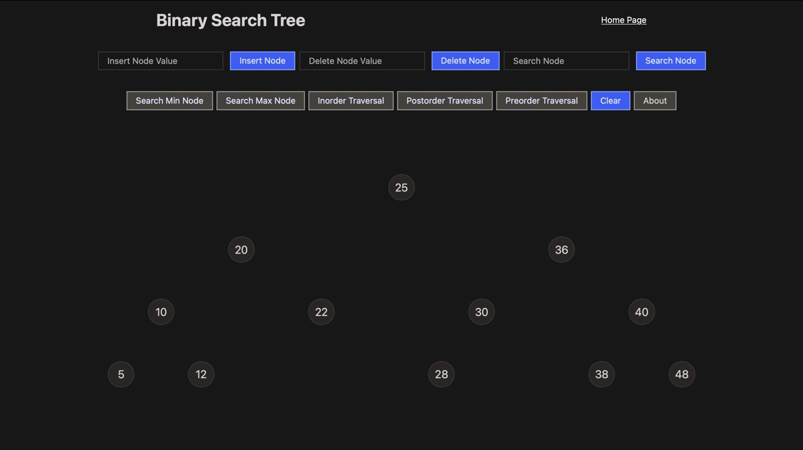
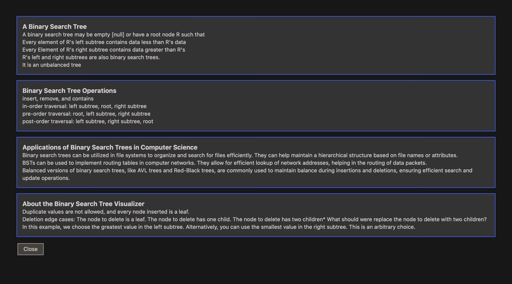
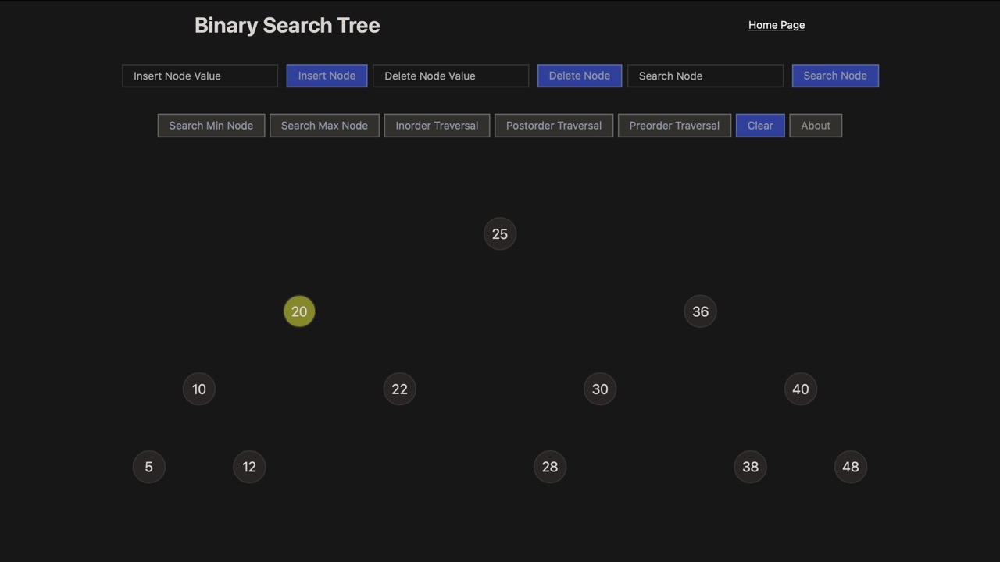
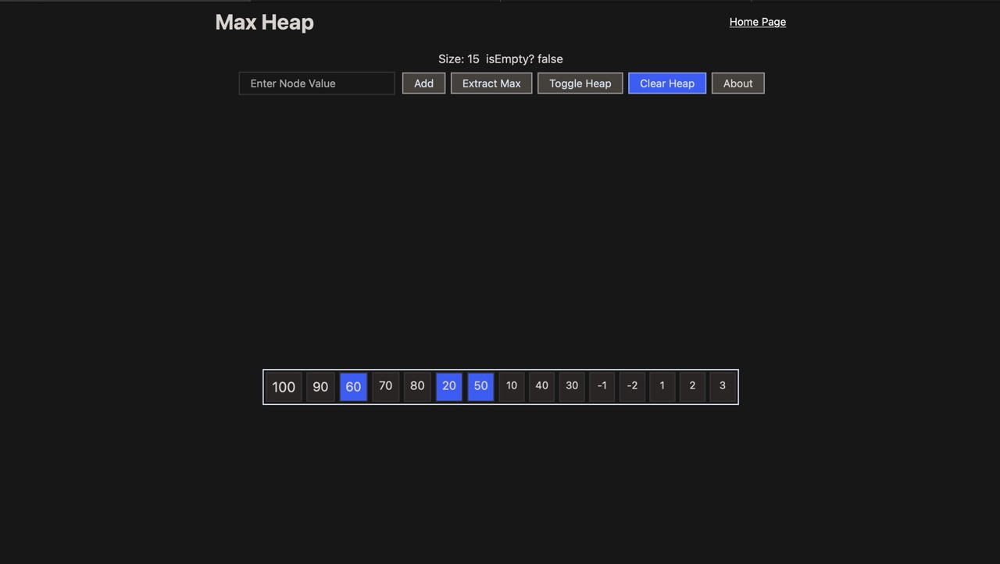
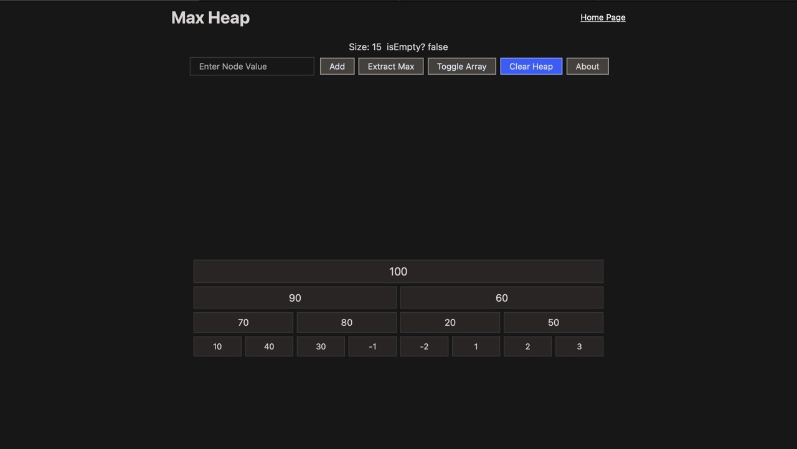
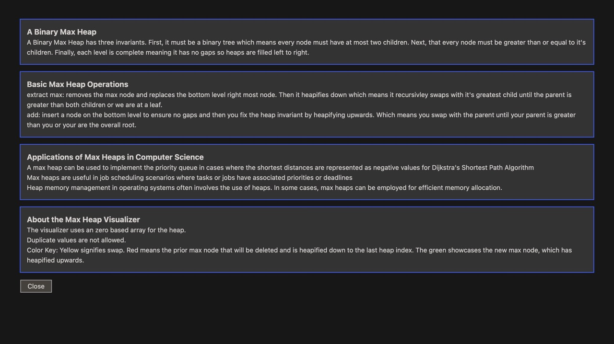
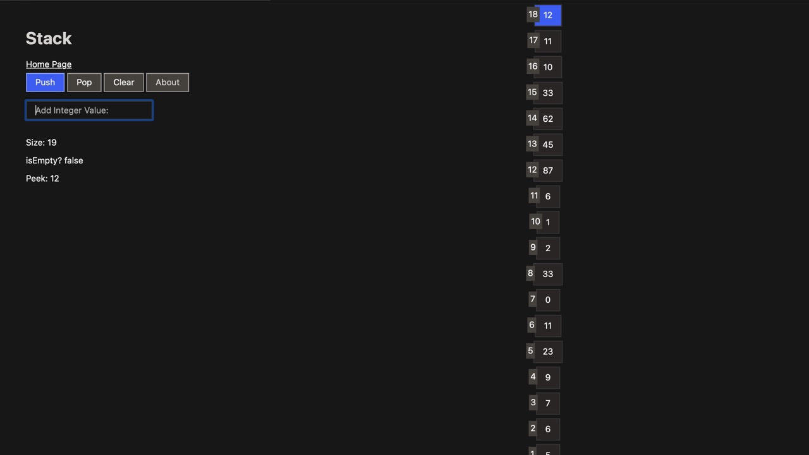
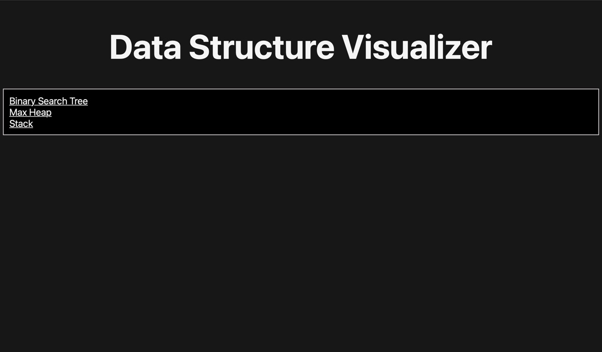
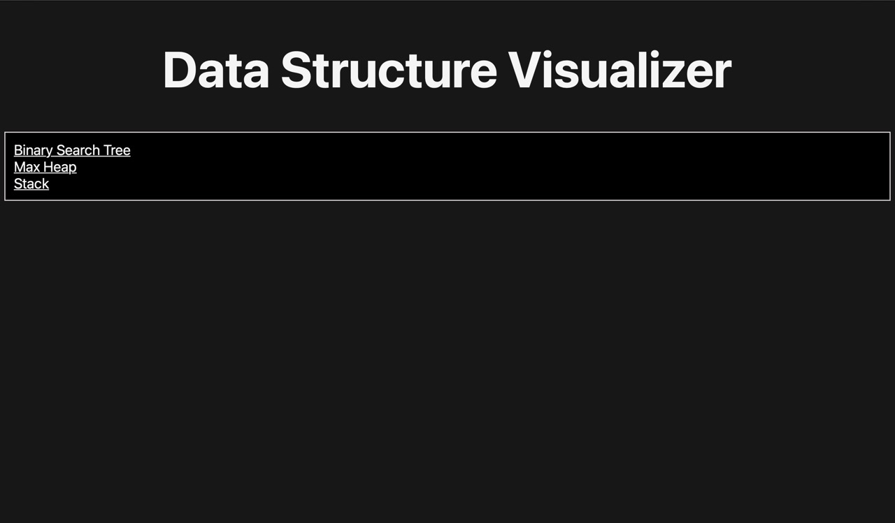
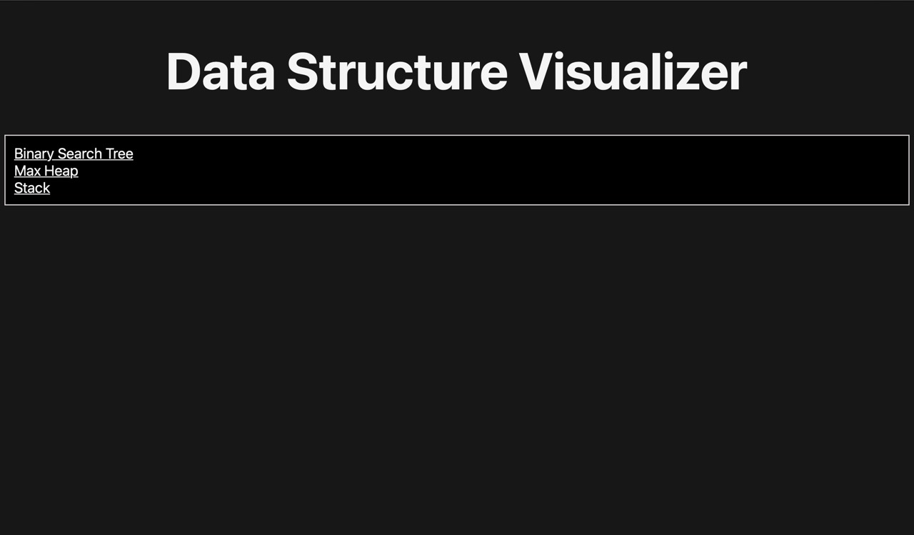

This website showcases data structures visually. The user may interact with the structures and their relevant operations. Additionally, each page has an informational modal which compliments the site interactivity. The hopes of this project is to aid anyone learning data structures gain familiarity with those concepts. As the designer and developer I implemented a modern, consistent, and fast interface.







 

